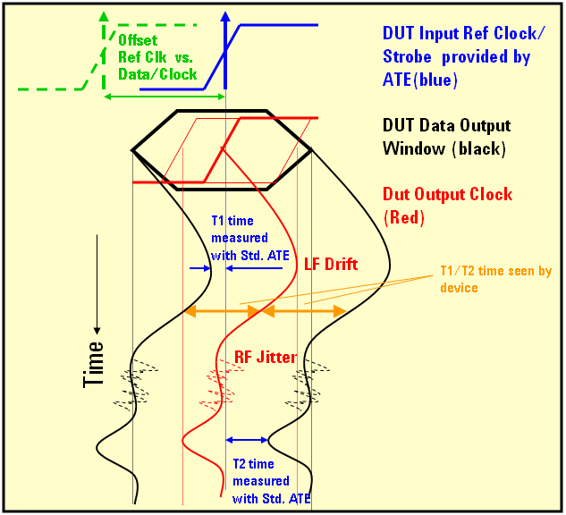

Source-synchronous data bus
To mitigate the performance problems caused by a faster and wider data bus, bus lines are grouped into smaller entities with own clocking in a source synchronous interface.
As memory devices are called upon to perform more computation-intensive functions, the amount of data, and the speed with which that data must be moved to and from peripheral devices, is increasing rapidly and pushing the uppermost bounds of performance. To mitigate the performance limitations, buses have traditionally been made wider and faster. One solution lies in source synchronous operation.
In source synchronous operation the device produces its own clock that travels in parallel with the data. In this way, the clock suffers the same delay and drift as the data, enabling the data to be reliably clocked into the receiving device.
The memory derives this data clock (also called strobe) from the system wide reference clock.
There are several failure modes to distinguish which must be covered by the source synchronous test method:
- Static offset variations
The timing of the strobe versus the reference clock can vary from device to device
- Common mode drift (dynamic)
In source synchronous devices, the phase of the output clock and the output data can show a common dynamic distortion within a data pattern, transferred over the interface, with respect to the system wide reference clock.
- Relative timing variations
The relative timing of the output clock (the strobe) and the data signal can vary dynamically. This can be tolerated if this timing still satisfies the specification (for example, setup time, hold time).
Example
The figure below illustrates the timing variants.

Here, the nominal case shown is the reference clock having the same cross-over point than the data clock. Also, the data eye is centered to the data clock cross-over point. The data eye shown here is meant to represent a group of data bits without any skew. In reality there is skew, which closes the data eye.